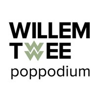
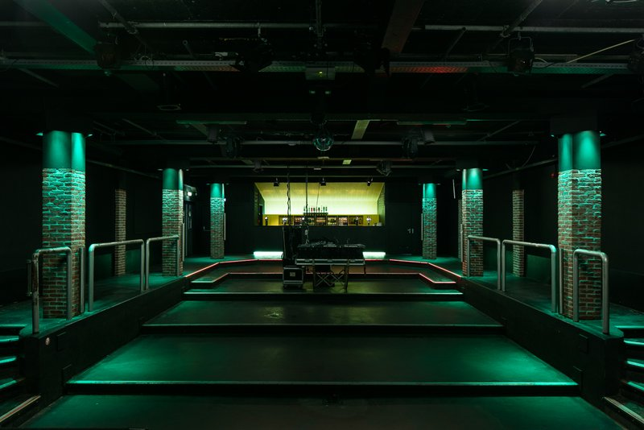

Nemsis
Nemsis serveert je een nieuw genre: Modern-Oriental Grungepop
- Dag
- zaterdag
- Begin
- 19:00
- Einde
- 19:45
- Soort
- Show
- Locatie
- Willem Twee
- Plek
- Grote Zaal
Nemsis
Modern-Oriental Grungepop. Dat is dagelijkse kost voor NEMSIS, een jonge band die dit genre zelf heeft vormgegeven. Het uit zich in energieke muziek met heldere vocalen en rauwe gitaren. Deze band wil je zeker niet missen!
De band is momenteel bezig met de laatste succesvolle optredens bij de Popronde maar zullen in januari de boel onveilig maken op RAUWKOST. De eerste EP ‘Sugar, Why so bitter?’ bevat nummers waar tegenpolen met elkaar samensmelten. Hard en zacht, lief en agressief, mooi versus lelijk. Niet alleen in de klanken maar ook in de tekst zijn deze contrasten te horen. Laat Nemsis maar rauw op je dak komen in de Willem Twee Grote Zaal!


 Willem Twee
Willem Twee

Grote Zaal Kleine Zaal Spiegelzaal Kunstruimte Kelder
In de Willem Twee fabriek werden vroeger sigaren gemaakt, maar nu beeldende kunst, grafiek, film en muziek!

"Als je naar de Willem Twee fabriek komt ben je de sigaar: de artiesten daar grijpen je direct bij de strot, en laten je niet meer los. Dat werkt nogal verslavend, je wil er niet meer van weg… Pas op dat de rest van het programma niet in rook voor je op gaat!"
Grote Zaal

Willem Twee poppodium heeft twee zalen: een grote en een kleine. In de grote zaal staan door het jaar heen acts in alle genres, grote en kleine. Ook worden er feesten gegeven.
Op vrijdag opent niemand minder dan JOOST het festival. Hij mag dan wel Joost Klein heten, maar hij is eigenlijk te groot voor de Grote Zaal van Willem Twee, die in werkelijkheid best wel klein is. Ben dus op tijd aanwezig! Met het daarop volgende openingsfeest MOSHKAUW knallen we erin met een dik vet Russisch thema vol gekte en dansplezier. Op zaterdag komen ''s middags de jongste rauwkostgangers vanuit heel Brabant afgereisd voor hun favourite rockact Hippe Gasten. In de avond gaan we verder met de meest rauwe en aanstormende indie-acts van de Benelux. We sluiten waardig af met een knaloptreden van de Britse live drum 'n bass sensatie Dr. Meaker, hét succes van RAUWKOST 2017.